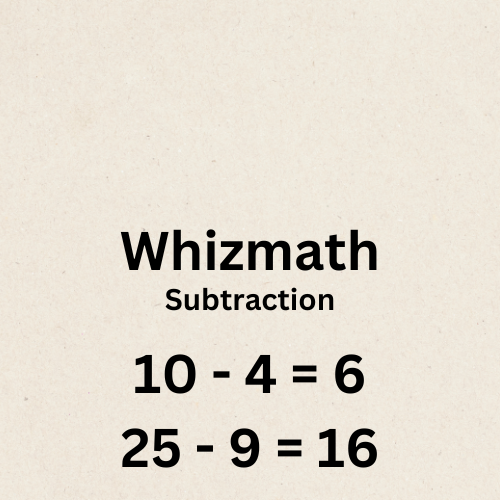

Subtraction is one of the basic operations in arithmetic. It involves finding the difference between two numbers. Subtraction is symbolized by the minus sign (-).
In its simplest form, subtraction involves taking away one number from another to get the difference. For example:
Example 1: 8 - 3 = 5
This means that when we subtract 3 from 8, we get a difference of 5.

Subtraction is not commutative, meaning that changing the order of the numbers changes the result. Mathematically, this is expressed as:
a - b ≠ b - a
Example 2: 10 - 4 ≠ 4 - 10
10 - 4 = 6 and 4 - 10 = -6
Subtraction is not associative, meaning that the way numbers are grouped in a subtraction operation changes the result. Mathematically, this is expressed as:
(a - b) - c ≠ a - (b - c)
Example 3: (10 - 2) - 3 ≠ 10 - (2 - 3)
8 - 3 = 5 and 10 - (-1) = 11
When subtracting larger numbers, it is often helpful to align the numbers vertically and subtract each column starting from the rightmost digit. Let's look at an example:
Example 4: Subtract 567 from 1342.
1342
- 567
------
775
Starting from the rightmost column, we subtract 7 from 2. Since 2 is less than 7, we borrow 1 from the next column, making it 12. 12 - 7 = 5. We then proceed to the next column and continue subtracting. The difference is 775.
Word problems require understanding the context and applying subtraction to find the solution. Let's look at a few examples:
Example 5: John had 15 apples, and he gave 7 apples to Sarah. How many apples does John have now?
Solution: 15 - 7 = 8
John now has 8 apples.
Example 6: There were 123 students in the school cafeteria, and 34 students left. How many students are now in the cafeteria?
Solution: 123 - 34 = 89
There are now 89 students in the cafeteria.
When subtracting fractions, it is essential to have a common denominator. Let's explore how to subtract fractions with different denominators.
Example 7: Subtract 1/3 from 3/4.
Solution:
1. Find the least common denominator (LCD): The LCD of 4 and 3 is 12.
2. Convert each fraction to have the LCD as the denominator:
3/4 = 9/12
1/3 = 4/12
3. Subtract the fractions:
9/12 - 4/12 = 5/12
The difference between 3/4 and 1/3 is 5/12.
When subtracting decimals, it is important to align the decimal points. Let's look at an example:
Example 8: Subtract 2.678 from 5.432.
5.432
- 2.678
------
2.754
Align the decimal points and subtract each column starting from the rightmost digit. The difference is 2.754.
Subtraction is used in many real-life scenarios, such as budgeting, shopping, cooking, and more. Let's explore a few examples:
Example 9: Budgeting - If your monthly income is $3000 and your total expenses are $2500, how much money do you have left?
Solution: 3000 - 2500 = 500
You have $500 left after covering your expenses.
Example 10: Shopping - If you have $100 and you buy items worth $45, how much money do you have left?
Solution: 100 - 45 = 55
You have $55 left after your purchase.
Here are some practice problems to test your understanding of subtraction:
1. Subtract 432 from 987.
2. Subtract 5/8 from 7/8.
3. Subtract 1.234 from 2.345.
4. If you have $150 and you spend $75, how much money do you have left?
5. A recipe requires 3/4 cup of sugar, but you only have 1/2 cup. How much more sugar do you need?
Subtraction is a fundamental arithmetic operation used in various aspects of daily life. Understanding the properties of subtraction, subtracting larger numbers, and applying subtraction in real-life scenarios are essential skills. Practice regularly to improve your subtraction skills and solve more complex problems with ease.